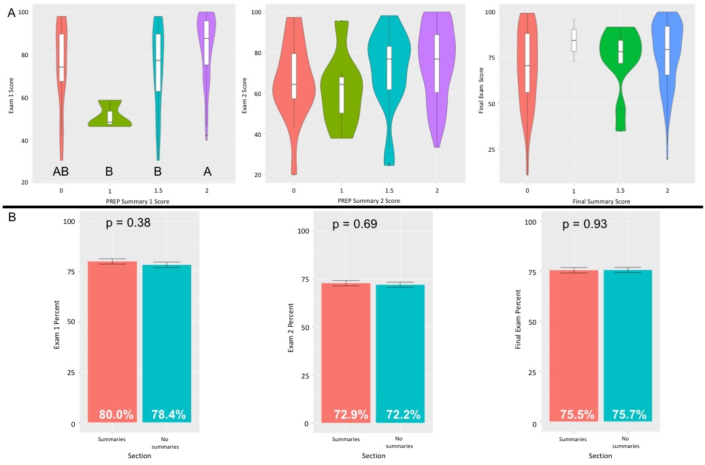
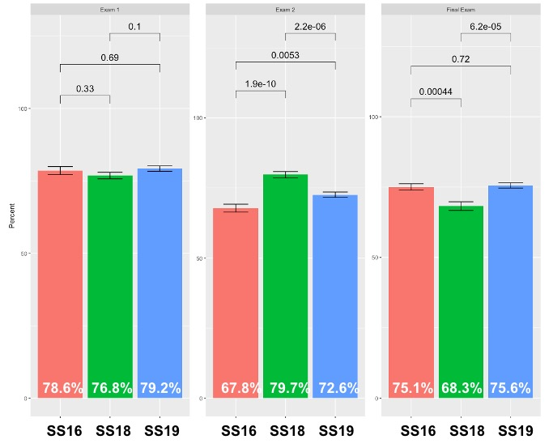

Mentored Teaching Project
Michigan State University
01/01/2019
– 05/05/2019
Introduction
Science is driven by numbers, data, and evidence. Professors who teach science in college are trained scientists, and when they teach science, they often assess student understanding in the same way they approach science; by gathering data. Unfortunately, many exams that professors implement don’t test true understanding and comprehension. Instead, these exams test a student’s ability to produce a specific number with a specific approach. If the student provides the correct answer, it is assumed to be evidence of the student’s understanding. However, given enough practice, many students are capable of solving exam problems even though they may have significant misconceptions regarding the principle the question is addressing. In IBIO 341, Fundamental Genetics, exams are heavily weighted on problem-solving, showing work, explaining the approach, and interpreting the result. These questions test knowledge, comprehension, application, and analysis of material, but fail to test higher levels of Bloom’s taxonomy.
I want to examine how writing exercises affect student abilities to learn and apply fundamental principles and techniques in Genetics. The goal of these writing exercises is to push students into the synthesis and evaluation levels of Bloom’s taxonomy, while also allowing an opportunity to intervene when misconceptions are apparent. This project aims to answer the question; does writing short essays on specific genetic principles and techniques, backed by peer-reviewed and non peer-reviewed sources, improve student understanding of the principles and techniques?
Materials and Methods
I have helped teach ‘Fundamental Genetics’ (IBIO 341) in the spring semesters of 2016, 2018, and 2019 (SS16, SS18, SS19). In 2016 and 2018, we did not implement writing assignments prior to exams. For 2019, I assigned a writing prompt two weeks before each exam and returned them one week prior to the exam, for a total of 3 writing assignments. I asked students to submit written summaries digitally. These summaries were worth two points. One point was awarded for turning in the summary with a minimum of 400 words. One point was given for using a minimum of 3 sources. Two of these sources were required to be a peer-reviewed or professional document from a trusted scientific source (i.e. journal article, published protocol, scientific company webpage). The third source could be from anywhere, including non-peer-reviewed sources (i.e. Wikipedia, YouTube, etc.). The objective of this 0-2 grading scale was to have students fall into one of three categories; those who didn’t do the assignment (0), those who didn’t try to synthesize and evaluate relevant content (1), and those who pushed themselves to master the content via synthesis and evaluation (2). While grading assignments, I learned that many students don’t understand how to properly cite sources, with some using direct quotations from the sources rather than putting the content into their own words. In instances where direct quotes were used, I deducted half a point (0.5).
There were two sections of this class in 2019 with approximately 200 students each. These writing assignments were only implemented in one of the sections. I compared the exam grades from the 2019 section that had writing assignments to the exam grades of 2016, 2018, and 2019 sections that did not have writing assignments. To determine the impact of the writing assignments, I analyzed exam grades following each of the three exams. Since 2016 and 2018 classes also had 3 exams, I was able to compare the 2019 section with writing assignments to many different sections.
Results
In general, the distribution of exam grades were similar across exam 1, exam 2, and the final exam, ranging from approximately 20% to 100%. Students who followed instructions and submitted the written assignment with the appropriate length and references and scored a 2 on the assignment prior to exam 1 had significantly better exam 1 scores than students who turned in the assignment but failed to reach the word limit or use 3 appropriate sources (Fig. 1 A). Students who failed to turn in the written assignment did not do significantly better or worse than any other category. Exam 2 and final exam grades did not see statistical differences based on their written summary grades. (Fig. 1 A). While students assigned the summary assignments performed numerically better on exams 1 and 2, these grades were not significantly higher than students who were not assigned the summary assignments (Fig. 1 B).
Figure 1. The effect of pre-exam written summary assignments on exam grades. Summary assignment scores had a significant impact on exam 1 grades, but not on exam 2 or final exam grades (A). Students who were assigned the exam summaries did not perform significantly different on the exam than students who were not assigned the exam summary (B). Class averages are presented at the base of each bar chart.
Exam grades were next examined over the three semesters that I have taught. In 2019, the exam summaries were assigned while in 2016 and 2018 they were not assigned. Exam 1 grades were not significantly different across years, but exam 2 and the final exam did show significant differences across years (Fig. 2). In 2018, students did significantly better on exam 2 than in either 2016 or 2019, while students in 2019 also performed significantly better on exam 2 than students in 2016 (Fig. 2). However, students in 2018 performed significantly worse than students in 2016 and 2019 on the final exam (Fig. 2).

Figure 2. Exam grades across semesters. Exam 1 grades were not influenced by semester, but Exam 2 and the Final Exam did display significant semester-specific differences.
Discussion
In science classrooms, exam questions are often designed such that a single word or phrase is expected. However, this type of question does not test true understanding of material. By requiring a written response to given prompts, students were forced to internalize content and describe their understanding in their own words. This type of assignment did have an effect on one of the exam grades, but not consistently across all three.
Students who met all requirements for the first writing assignment faired better on the first exam than students who failed to meet the full requirements of the writing assignment. Interestingly, students who did not complete this first assignment at all faired just as well as those who earned full credit. This result indicates that some students were prepared enough to do well on the exam without submitting their writing assignment. These types of students may have felt confident enough in their understanding that they did not feel the benefit of completing the assignment. Students who completed the assignment but did not stretch their understanding by meeting the word limit and incorporating sources likely felt confident with their understanding of the content as well, hence the lack of effort to meet all of the assignment requirements. Exam 1 scores indicate that this was a false sense of confidence for this group of students. In contrast, some students who met all requirements of the writing assignment still performed poorly on the exam, indicating that some students in this group may have had a false sense of security in their understanding of the material.
Interestingly, there were significant differences in exam scores across years, particularly for exam 2 and the final exam. These analyses were performed to determine if the writing assignments allowed students to achieve higher scores in 2019 than in previous years. Exam 1 results indicate that the writing assignments had no effect on exam scores compared to previous years. The significant differences in exam 2 and final exam scores could suggest an effect of the writing assignment, but more likely capture the differences in the order the content was presented. In spring semester 2016 (SS16), the most difficult content was covered prior to exam 2, which resulted in significantly lower scores compared to SS18 and SS19. Similarly, the most difficult content was covered prior to the final in SS18, resulting in significantly lower scores compared to SS16 and SS19.
A student who has good writing skills may also be talented at critical thinking and problem solving. These skills are highly covariant among students. Therefore, we cannot rule out that the correlations between full scores on the writing assignment and the high exam scores are due to a general ‘good student’ effect. I made attempts to control for this by treating the student’s final GPA in the class as a random effect and regressing the writing assignment grades with the exam scores. However, results indicated that the final GPA explained very small amount of variation in the relationship between writing scores and exam grades. If I had prior knowledge of what grade each student expected to receive in the class, this information along with final GPA may have explained more variance because it would have given an indication of effort that each student expected to put into this class.
Conclusions
The most advanced form of science requires frequent scientific writing. Scientists become professionals by performing research and writing a thesis. Once the doctorate is earned, scientists continue writing to publish their findings in peer reviewed journals. And seasoned scientists write many grant proposals to try and fund further research. It follows then that students in science classrooms should be expected to write in order to show their understanding of classroom material. While the results of these writing assignments were not consistently observed across all three exams, I believe that it is a worthwhile endeavor to add more writing into science classes. A few students mentioned that they found the assignments helpful, and with some more carefully designed controls, a direct impact of writing assignments on student understanding in classrooms might be accomplished.
Acknowledgements
I would like to thank Dr. Terri McElhinny and Dr. Mariah Meek for the opportunity to conduct this project in their classrooms, and for their useful discussion and guidance in my efforts to become a better teacher.